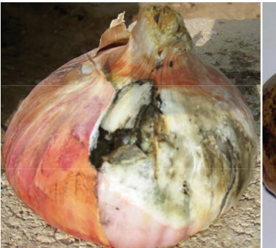
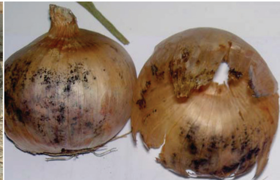

Black mould disease
How to know it: Small black spore masses on leaves (refer to Figure 7.9).
How to manage it: Handle bulbs carefully to avoid bruising.
Use fungicides.


Exercise 7.1
1.
You have a piece of land with suitable soils and climate conditions for onion production.
How would you prepare the land for onion production?
2.
You have a choice of different onion varieties to grow on your farm.
Each variety has different characteristics in terms of yield and market demand.
How would you decide which variety to grow?
Give reasons.
3.
You are facing a severe drought.
How would you manage water requirements for onions in such a situation?
4.
Pests have started to become a problem in your onion fields.
How would you manage these pests without harming the onions?
Harvesting and postharvesting management of onion
Onions are ready for harvesting after 90 - 150 days, depending on the variety of onions.
Alternatively, we can start harvesting when 50 - 75% of the onions have bent their necks.
We can uproot the onions by hand or using equipment like a fork or other advanced equipment such as a harvester.
If we do it by hand, we water the area first to soften the soil before pulling out the onions.
Then, we lay them flat on the top of the beds with their roots up.
Managing onions after harvesting
After harvesting, we have to perform some practices to keep the onions good for a long period.
The practices/processes include: